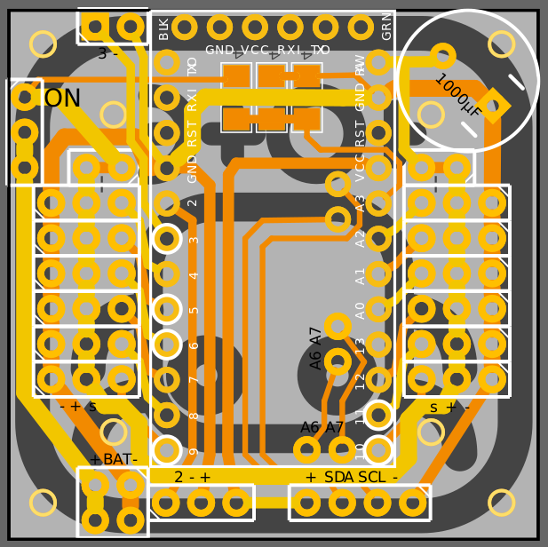

PCB Redesign¶
Published on 2015-06-26 in Tote.
After the recent failures and after using the Tote’s PCB in a couple of different projects, I decided that some changes are needed to the design. Here is the new PCB :
There are several changes compared to the previous one:
a nice logo on the silkscreen,
the board is square again,
removed the additional holes,
the servo connectors are moved slightly, to make more room for screws,
battery connector moved to the front edge of the board,
removed the HC-SR04 sensor header, since it doesn’t work reliably,
reordered the IR sensor pins to match the pinouts of my sensors,
added a header for connecting a piezo speaker, for making noises,
added pins for A6 and A7 gpios of the Pro Mini, for both 3.3V and 5V versions,
you no longer need to add a jumper, that place has a connection by default, and you can cut the trace if you want to connect a voltage regulator,
there is another trace you can cut to be able to disconnect power to the servos, but still have the Pro Mini and all the sensors powered.
Don’t worry, the old board will not stop working, and I will still support it. The changes are not that big anyways – I made sure that I don’t change any pin numbers or anything similar, which would make the software incompatible.
I haven’t ordered the new boards yet, so there is no link for ordering them. I will wait a couple more days for ideas for more improvements, and then order them.